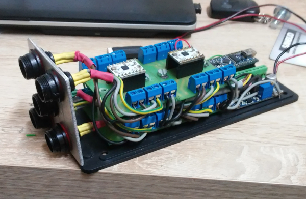

This was a semi-commercial project, The goal of this was to quickly create a compact controller for 4 stepper motors, which will drive them in response to physical buttons push, and additionally take care to not exceed allowed limits without use of physical limit switches, so soft limits were implemented.